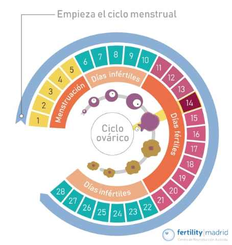
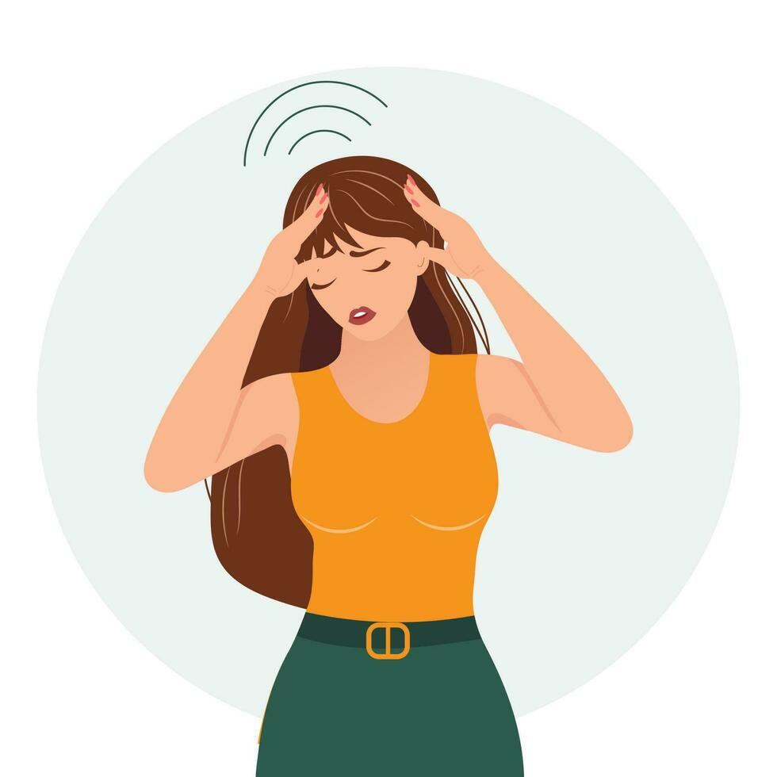

fases del ciclo menstrual

1fase proliferativa
La segunda fase corresponde a la fase folicular, también conocida como fase proliferativa o fase preovulatoria Esta fase se completa en 10 -14 días y en ella crece y se prepara el folículo para la ovulación Esta etapa transcurre entre el inicio de la menstruación y hasta que llega la ovulación.
2fase secretora
Es la fase que se da entre la ovulación y la siguiente menstruación. Dura entre 9 y 16 días, alrededor de unos 14 de media. El óvulo avanza por la trompa de Falopio esperando a ser fecundado por un espermatozoide para dar lugar al embrión.
3fase isquémica
En caso de que el óvulo liberado no sea fecundado por un espermatozoide, el cuerpo lúteo desaparece. En consecuencia, la producción de estrógenos y progesterona disminuye gradualmente en lo que se conoce como fase isquémica del ciclo menstrual.
La esterilidad en la mujer
La esterilidad femenina es la incapacidad de concebir debido a problemas relacionados con los óvulos que impiden la fecundación y, por tanto, el embarazo. La alteración de la capacidad reproductiva puede aparecer debido a una gran variedad de causas, en función de las cuales los síntomas en la mujer serán más o menos notables. Por esta razón, puede haber situaciones en las que la mujer no sea consciente de su esterilidad hasta que se someta a las pruebas de fertilidad pertinentes.
Por ejemplo, en caso de esterilidad por factor endocrino, las alteraciones hormonales causan generalmente amenorrea o irregularidades menstruales, lo cual hará sospechar algún problema y, por tanto, llevará a la mujer a consultar al especialista.
La fertilidad en la mujer
Para que una mujer sea fértil, todos sus órganos sexuales deben ser funcionales. Esto se consigue gracias a las características anatómicas y al correcto funcionamiento del sistema endocrino que actúa segregando las hormonas adecuadas. Durante la infancia, no hay secreción de hormonas sexuales y el cuerpo actúa por igual en niños y niñas. La única diferencia en el cuerpo de ambos sexos son los caracteres sexuales primarios, es decir, los órganos sexuales.
Una vez llega la pubertad a los 11-12 años, los ovarios de la mujer empiezan a funcionar debido a la llegada de las hormonas FSH y LH desde la hipófisis, las cuales provocan la maduración de los órganos sexuales femeninos.
¿cuales son los sintomas en la menstruación?

sintomas
Sensibilidad de los senos Acné Hinchazón y aumento de peso Dolor de cabeza.
otros sintomas
Dolor articular o muscular,cambios de animo,Fatiga retención de líquidos.
cambios en el cuerpo

cambios como:
Los pechos crecen, las caderas se desarrollan, y salen granitos...
cambios como:
sale vello en partes que no savias que salia, y muchos cambios más...
cambios como:
Tu período puede ser largo o corto, y se considera normal...